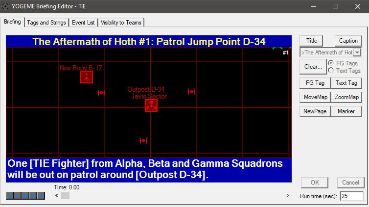
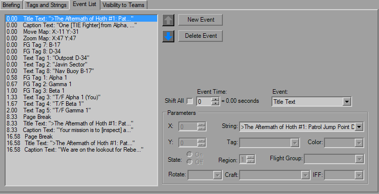

Briefing Dialog

This is the pre-mission briefing animation that plays on the wall before you fly. It animates at 12 fps, allows you to write on it, highlight FlightGroups, as well as moving and zooming the map. FlightGroups cannot actually be animated and change position on the map, as their locations and presence are defined in the FG itself
This is the view or what you will see in-game. The window and ship icons are scaled and sized to the pixel such that if you can see it here, you can see it there (try it, fire up TIE's first mission and spot the green corner of shuttles in the upper right). The Title and Caption fields above and below the map are sized as best I could, this is another item you'll have to check in-game as make sure you got it just right.
The white number in the corner is applied in YOGEME only and refers to the "page" that's currently active, controlled by the New Page button which adds the "Page Break" event. In TIE, when you hit the "Next" arrow in the briefing (also the double-arrow button here with the playback controls) that goes to the next page. This number does not exist in-game.
The buttons on the right allow you to place events during the briefing. Use the slider at the bottom to move back and forth in the briefing, as well as the playback buttons in the lower corner. Those should be simple enough to figure out. The runtime box on the lower right is also exactly what it suggests, the number of seconds before the briefing reset and starts over.
With all events, the OK and Cancel buttons will activate to confirm or trash the event creation.
The Title button changes the text at the top, you can use any string you like. The Caption buttom likewise changes the text at the top, and you can use any string you want. Selecting one of these buttons will active the drop-down below.
Selecting the Clear... button will activate the radio buttons next to it, and is used to wipe all text tags or FG highlights.
Selecting the FG Tag will show two fields, one to select the Tag number, and one to select the FlightGroup. You can highlight eight FlightGroups at one time.
Using the Text Tag will modify the view slightly; a panel for the string settings will appear and various controls will hide momentarily. Click on the map where you want the string to appear. I've tried to size this as close as I can, so you've got a good estimate of what it will appear like in-game. You have eight tags to use at a single time, you can use any tag you like.
Both the Move Map and Zoom Map buttons will hide the text elements and show scroll bars on the side of the map. Drag these to move/stretch/shrink the map however you please. Note however that YOGEME does not animate this process, while in game it is not a snap function, there's a little bit of travel time between views.

At any time on the map, if you hold the middle mouse button a popup will appear to display raw map coordinates, zoom level, and for TIE and XvT also the coordinates in kilometers. If you hold and drag you can temporarily move the map around and zoom with the mouse wheel, it will snap back to the original position when you release the button. This likely isn't something you'll need to use on a regular basis, but is there if you want.

A simple tab, you have 32 tags and 32 strings at your disposal. As is the case in officer questions, use the "[ ]" brackets for green highlighting. For the title (typically the first string, as shown) use ">" for yellow highlighting and centered. If you want to force a line break, use the "$". There's no hard limit to length, just what you can see in-game
A word of caution for custom missions; if you plan on replacing existing mission numbers (ie, starting from mission 1) then the original briefing voices will play if you use that particular string index. So if you use the second string, regardless of what it says, you will still hear "One TIE Fighter from Alpha..." (I can hear his voice in my head). This can be mitigated by using indexes further down in the list instead of starting at the top.
The Notes field is not used in TIE, so will only be enabled for XvT and XWA.

This is the humanized version of the raw briefing data. The list of everything is on the left, you have arrow buttons to move them around, you can delete/add/modify events from here, you can build the entire thing from here if you felt like it. You'll notice a few fields that you will never have access to, regardless of what you do. This is because the briefing dialog is actually shared between TIE, XvT and XWA. The animation tab gets redone to match the appearance of the platform, while the nitty-gritty on the backend stays the same.
The Event Time field is the raw number with the rounded value in seconds listed next to it. Changing that value will automatically move the event up and down the list as neccessary. If the Shift All box is checked, it will also move every event after it by the same amount. Changing the Event drop-box will enable and disable Parameter fields as neccessary and behave the same as on the main Briefing tab.
Now, this is a quirk of TIE, but as you can see in the image above the Title is redefined after every Page Break. That's because Page Break clears both the caption and title. You can redefine the Title at the same time, but make sure the Page Break is higher on the list. Use the "SkipMarker" event to add points where the "Next" button in playback will stop, but won't clear the text.
The X and Y values are the raw numbers on the same scale as the raw FG Waypoint values. For Zoom, 48 is generally a good number and is the YOGEME default.
There is an "End Briefing" event, although it does not need to be manually placed and YOGEME does not show it. YOGEME will automatically add that event at time=9999.